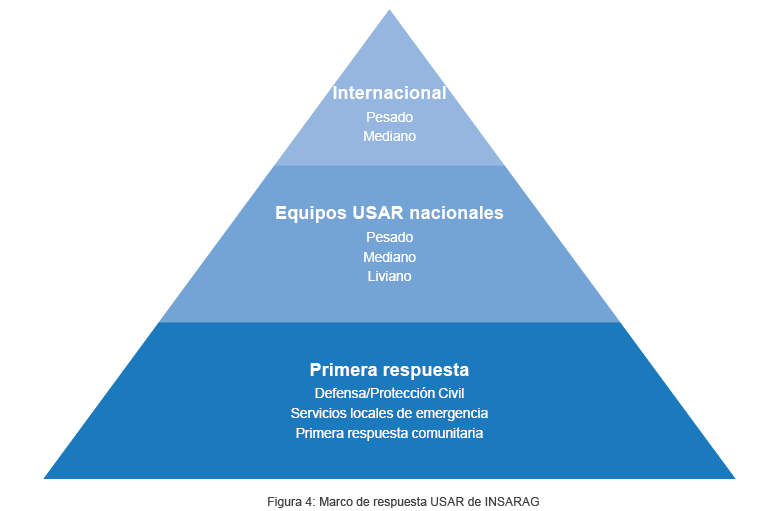

Las Guías INSARAG del 2015 incluyen un Manual completo sobre el fortalecimiento de capacidades nacionales y locales (Vol. II, Manual A), y recomiendan a los países el establecimiento de un mecanismo de acreditación para los equipos nacionales “el cual permitirá que un país gestione, monitoree y establezca los mismos estándares de manera oficial y se adhiera al pie de la letra a los criterios y guías de INSARAG”. Esta temática se viene trabajando particularmente desde el 2014 en el taller organizado en Chile sobre “La creación de un sistema país de acreditación USAR” y se han incorporado muchas de las lecciones aprendidas en la región de las Américas en los últimos años.
El Grupo regional de INSARAG en las Américas en el 2016 presentó una propuesta al Grupo directivo INSARAG, de donde surge la solicitud de diseñar “un proceso de certificación/revisión entre pares, de los procesos nacionales de acreditación de equipos USAR que confirme al país que está cumpliendo con los estándares mínimos en el proceso de acreditación para equipos USAR nacionales” la misma que fue presentada al Grupo directivo en el 2017.
Se creó un Grupo de trabajo sobre acreditaciones nacionales en el 2016, liderado por el Grupo Regional de las Américas con otros países interesados, y la propuesta desarrollada y consultada a nivel global en el 2016 fue aprobada por el Grupo Directivo INSARAG en el 2017.
Clasificación vs acreditación
Las Guías INSARAG 2015 hacen la diferencia entre la clasificación IEC, el cual es un proceso entre pares, diseñado por la comunidad INSARAG para la verificación del cumplimiento de los estándares de los equipos con mandato internacional; y la acreditación, un proceso por definición a nivel nacional mediante el cual se reconoce el cumplimiento de los estándares nacionales ante un ente acreditador, es decir las autoridades nacionales competentes.
El proceso de acreditación nacional
El marco de respuesta USAR de INSARAG nos muestra una estructura que busca asegurar la interoperabilidad entre los diferentes niveles de respuesta USAR, y determina que “es vital que las prácticas de trabajo, el lenguaje técnico y la información sean comunes y compartidos entre todos los niveles del marco de respuesta USAR” (Guías INSARAG, Volumen I, 2.1). Por tanto, los estándares desarrollados para la acreditación de equipos nacionales deben estar alineados con la metodología de INSARAG y por ello, deben ser reconocidos en este mismo marco.
Las Guías INSARAG actuales proveen una orientación muy general sobre el establecimiento de un proceso nacional de acreditación USAR.
En complemento a las Guías, se encuentra a continuación orientación adicional y más detalladas así como herramientas para el diseño y la implementación de un proceso de acreditación nacional. Esta orientación será incluida en la próxima revisión de las Guías INSARAG tal como aprobado por el Grupo Directivo en el 2017.
NOTA: Por definición, los estándares y procesos nacionales deben de ser elaborados y promulgados a nivel nacional por la autoridad competente. Esta orientación sirve para promover el uso de la metodología INSARAG por parte de las autoridades nacionales para sus equipos y la respuesta USAR nacional.
| Documentación de respaldo | Definición | Formatos sugieridos |
| 1. Plan Estratégico Institucional | Documento organizacional donde se proyectan y establecen los objetivos generales y específicos, las estrategias, líneas programáticas, determina proyectos, asigna recursos, con un horizonte de planeación a largo plazo. Incluir misión y visión e indicadores | Formato 1.1. |
| 2. Modelo y estructura Organizacional (que contiene los 5 componentes) |
Documento donde se establece el modelo organizacional de los equipos y se describen todos los Cargos o Puestos de la organización, se especifican los perfiles y responsabilidades, así como las destrezas y habilidades que requieren cada uno de ellos. | Formato 2.1. |
| 3. Plan operativo anual que incluya un plan de Inversión Anual y a mediano plazo | Documento que contiene la orientación de acciones a ser ejecutadas a corto plazo. y donde se establecen la planificación presupuestaria y financiera para la sostenibilidad del equipo a corto y mediano plazo, en correspondencia con el Plan Estratégico Institucional. | Formato 3.1. |
| 4. Programa de Capacitación y Entrenamiento Anual | Plan de capacitación que contenga una base de datos de los cursos o talleres efectuados y que defina objetivos, metas, responsables, recursos, entidades certificadoras, cronograma, carga horaria, malla curricular, cantidad de participantes en base a la capacitación mínima esperada para un grupo que opta a la acreditación según al nivel que postula. Así como, el plan de reentrenamiento. | Formato 4.1. |
| 5. Programa de Seguridad, Salud, Seguros y/o Beneficio legal de salud | Programas, procesos y herramientas diseñados para dotar a los equipos y sus miembros de instrumentos que brinden cobertura en el campo de la salud, seguridad ocupacional, beneficios legales y/o seguros; Incluyendo el chequeo médico anual y post-misión. | Formato 5.1. |
| 6. Convenios con proveedores de bienes y servicios | Descripción de cada uno de los convenios vigentes, debidamente suscritos, que permitan realizar los adecuados mantenimientos y adquisiciones de equipos, herramientas, suministros y servicios de las funciones propias de los equipos. | Formato 6.1. |
| 7. Gestión de recursos humanos | Documento donde se establecen las políticas de la organización, con respecto al Recurso Humano de la misma. (Alta y bajas, licencias, permisos, sanciones, etc.). | Formato 7.1. |
| 8. Instalaciones físicas del equipo | Detalle de cada uno de los espacios físicos que dispone el grupo para funcionar (bodegas, almacenes, dormitorios, gimnasio, cocina, etc.) | Formato 8.1. |
| 9. Herramientas, equipos y accesorios | Equipamiento, herramientas y accesorios definidos para el nivel operativo del Equipo USAR correspondiente. Debe estar físicamente disponible, buen estado técnico y contar con un sistema de registro de operación y poseer un mantenimiento preventivo y correctivo. | Formato 9.1. |
| 10. Capacidad Operativa y Autonomía | Documento donde se establecen los procedimientos operativos y periodo de funcionamiento operacional, por medio de los cuales se conduce las diferentes tareas desarrolladas por el Equipo USAR, durante el ciclo de la respuesta. | Formato 10.1. |
| 11. Logística | Documento donde se plantee los requerimientos logísticos para el cumplimiento de las funciones del equipo USAR (alimentación, alojamiento, transporte, etc.) | Formato 11.1. |
| 12. Tecnología de la información y comunicaciones | Descripción de los sistemas de información y telecomunicaciones (ej. fijos, portátiles y accesorios) definidos para el equipo USAR según nivel, estado de funcionamiento, plan de comunicaciones, sistema de registro de operación y mantenimiento preventivo y correctivo. | Formato 12.1. |
| 13. Mecanismo y procedimientos de activación y movilización | Procedimientos de activación y movilización del equipo USAR | Formato 13.1. |
| 14. Gestión documentaria | Conjunto de formularios que brinden soporte documental a las operaciones USAR (Formularios INSARAG recomendados) | Formularios INSARAG Esto debe ligarse al proceso 12 |